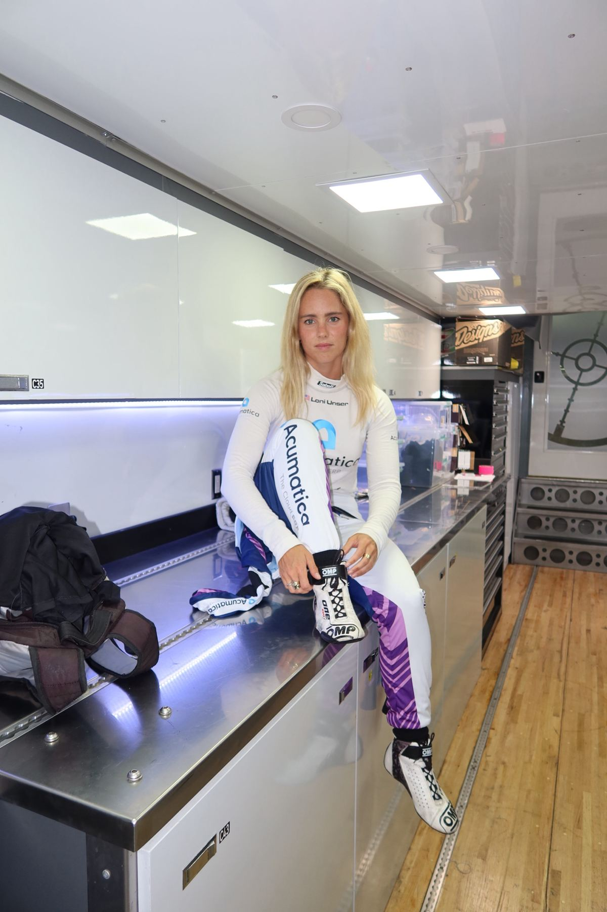

About
Who is Loni?
With a background in line-finding sports, including ski racing, Loni Unser started racing cars in 2017 and has shown promise early on in sports car racing. She has raced the Spec Miata classes, NASA, and the MX-5 Cup, as well as a variety of marques in the World Racing League and Porsche Sprint Challenge, among others. In 2022, she raced the Pikes Peak International Hill Climb and has participated every year since.
The young driver carries her family name to a new generation of fans. Her grandfather was Jerry Unser, the first of the famous Unsers to race at the Indianapolis Motor Speedway. From then on, the Unser family has won the prestigious Indianapolis 500 nine times and become known as “The First Family” of American auto racing.
Career timeline
In 2021, Loni became the first woman to finish in the top 10 back-to-back races in the highly competitive Mazda MX-5 Cup. That year, she also won the World Racing League Eastern Championship.
In 2022, she won the national championship racing a Porsche Cayman in World Racing League and finished second in her class at the Pikes Peak Hill Climb. Loni went on to get her first factory ride, racing for Acura in the 101st running of the Pikes Peak Hill Climb.
In 2024, Loni achieved 7 podium positions in the Porsche Sprint Challenge and raced for BBI and Mobil 1 at the Pikes Peak Hill Climb in a high-horsepower Porsche 911.
In 2025, Loni was the vice-champion in the Porsche Sprint Challenge and was the fastest Porsche on Pikes Peak, finishing 3rd in class.
Over the years, she has transitioned to various racing series, participating in events that highlight her versatility and competitive spirit.
Loni is recognized for her driving abilities and commitment to promoting women in motorsports, often advocating for increased representation and opportunities for female drivers.
With a blend of skill, heritage, and advocacy, Loni Unser continues to make her mark in the racing world, inspiring the next generation of racers.